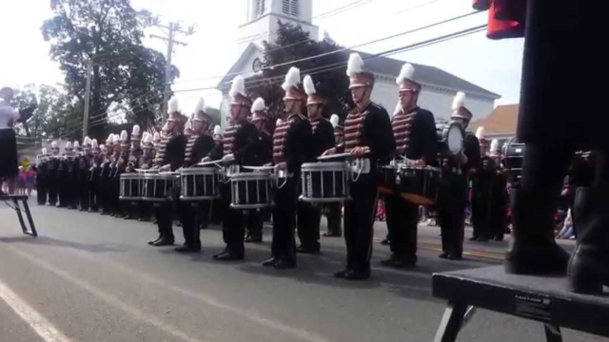

<!doctype html>

<html>
	<head>
		<meta charset="UTF-8">
		<title>Kyle Riley Bio</title>
        <link rel="stylesheet" type ="text/css" href="style.css">
    </head>
</html>
<body>
    
    <div id="fixed"></div>
    <a id="top"></a>
    <div id="big_wrapper">
        <div id="container">
        
            <h1 id="logo">Kyle Riley<span>- Bio</span></h1>
            <div id="header">
            
            </div>
            
            
            <div id="nav">
                
                <a class="btn" href="./index.html">HOME</a>
                <a class="btn" href="./schools.html">SCHOOLS</a>
                <a class="btn" href="./hobbies.html">HOBBIES</a>
                
            </div><!--/#navigation-->
            <div id="content">
            
                
        
	           <p>My name is <b>Kyle Riley</b>. I come from a town called <i>Belchertown</i>, it's in Massachussetts. This town is fairy close to Amherst, so I usually say I'm from Amherst. During my k-12 education, I have discovered two passions that I have. These passions are music and programming. Each one being a different form of passion, but still passions nonetheless. <br> I found music and began to play at the age of seven. I started with a drumset and a hand me down pair of sticks. I did have a classical guitar at this age, but I didn't have availability to guitar lessons. But the drum ones were free. I continued to play music from that age, all through High school. I played in Jazz, rock, and metal groups and the school band until graduation. When coming here, I have seen a lot less opportunity for music and I miss it.<br>When I got to high school, I started to become interested in programming. So in my Freshman year, I decided to use online courses and learn C++. I was able to practice this language for two years until I was able to take Comp. Sci my Junio year. Here I was taught Java and utilizing data and memory locations. Once I got to my Senior year, my Computer Science teacher would face getting fired <strong>(for posting racist slurs on Facebook)</strong> and would leave the students in Comp Sci 1 and 2. So I took over and taught the course in his place, using the notes he left behind. </p>
                
            </div>
            <div id="footer">
            <p class="copy">&copy; 2018, SE111 HTML/Javascript Class.</p>
            
            </div>
        </div>
    </div>
</body>
            
            